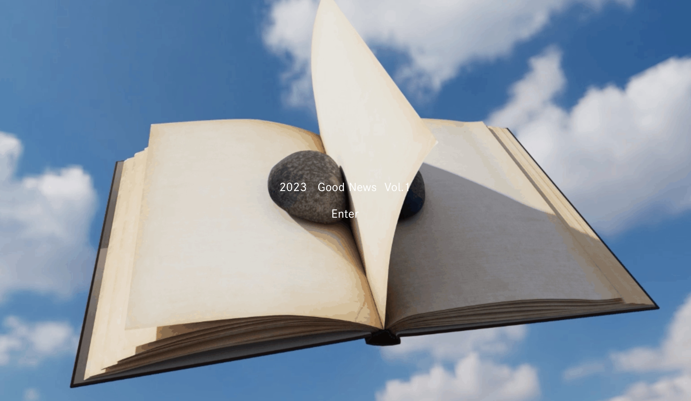
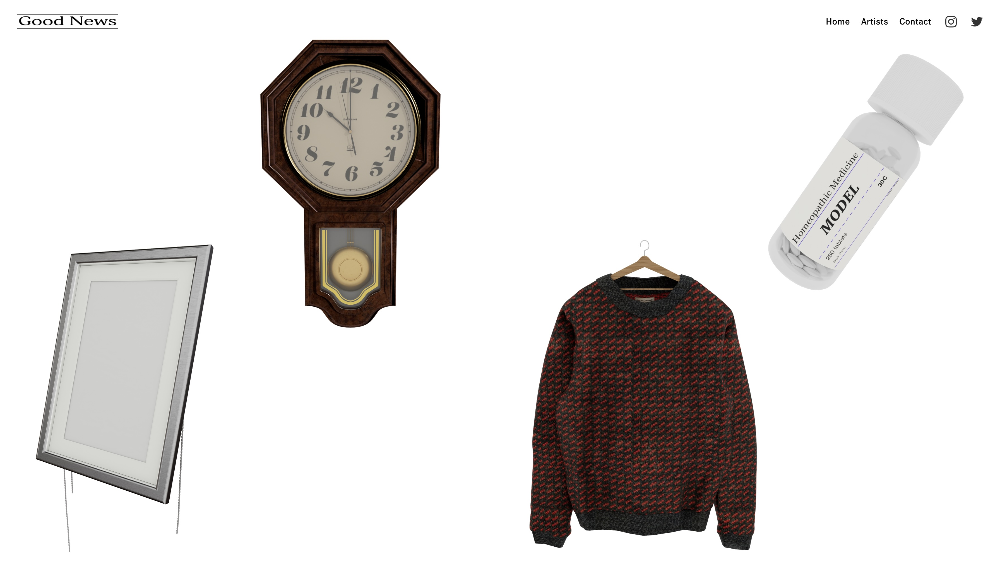
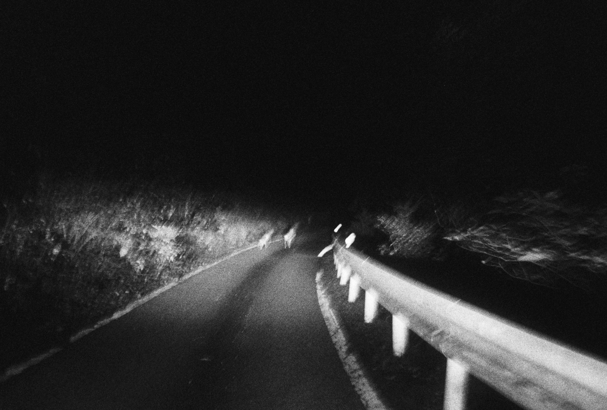
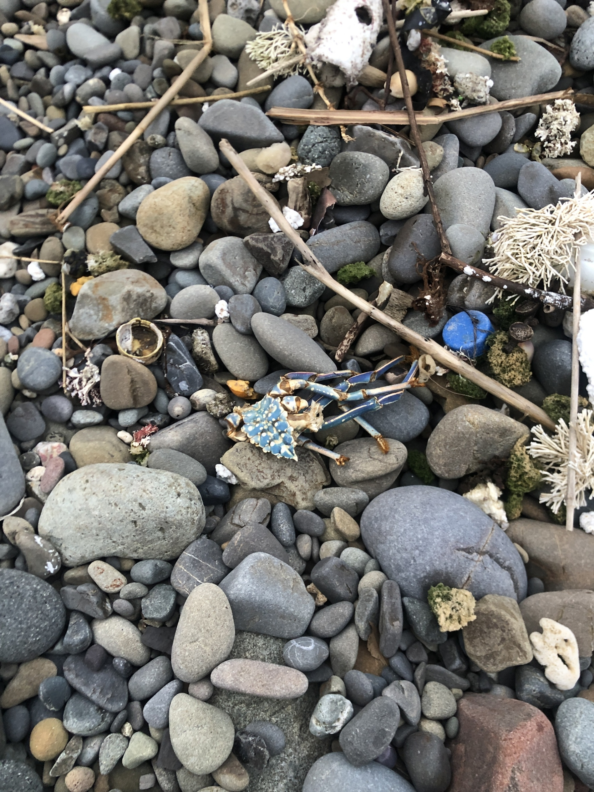

GoodNews Vol.1
theme : 記録


GoodNews Vol.1 は2023年3月31日から5月31日の2カ月に渡り公開されました。
参加したアーティストは岡千穂、小野台、堀内蓮、toulaviの4名。
ビジュアルデザインは0039。
< 小野 台 >
「 氈鹿 」


「微かな記憶。古ぼけた写真。私のことをじっと見つめていたその眼。私は確かにそこに立っていた。」
< 堀内 蓮 >
「 めずらしい朝 」

○ / ○
電車で、袖に付いてた毛玉飛ばしたら隣のおじさんにくっついちゃった
○ / ○
音楽のない喫茶店で、隣の席の老夫婦が口ずさむ演歌だけが頼りになる。
○ / ○
毎日がお葬式のつもりで、真っ黒な服を着ている友達
○ / ○
バックにこっそり入れたかんぴょう巻き(少)、絶対に美味しいから許して
○ / ○
すごくすごく暗い道
人が立ち止まらないような場所で、カップルが向かい合って静かにアルプス一万尺をしていた。
その横を自転車で通り過ぎることができた。
○ / ○
ブラックホール的強さ
< toulavi >
「 homeopathy(vocal) 」